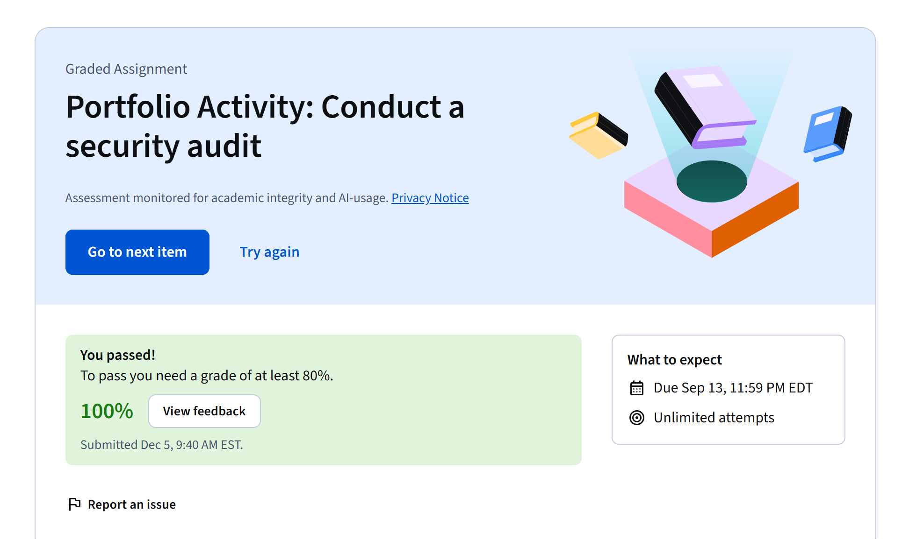

Botium Toys
Security Audit
A risk and controls review completed as part of the Google Cybersecurity Professional Certificate.
Overview
Turning a fictional scenario into a structured security review.
Botium Toys and its business environment were supplied as a course scenario. My role was to complete the graded audit activity and apply the frameworks, controls, and risk-management concepts taught in Course 2: Play It Safe—Manage Security Risks.
Audit process
How I approached the activity
- Reviewed the supplied audit scope, goals, assets, and risk information.
- Evaluated administrative, technical, and physical security controls.
- Considered whether the control environment addressed applicable compliance needs.
- Identified control gaps and areas where the organization could reduce risk.
Completion evidence
Verified course result

Coursera records a 100% grade for “Portfolio Activity: Conduct a security audit.”
Completed successfully
My original audit worksheet is no longer available, so this case study does not recreate specific findings. The evidence supports completion of the graded activity, while this summary describes the process and skills assessed.